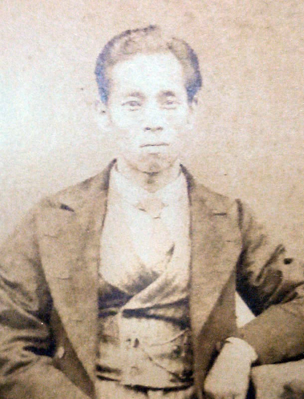
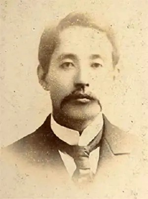
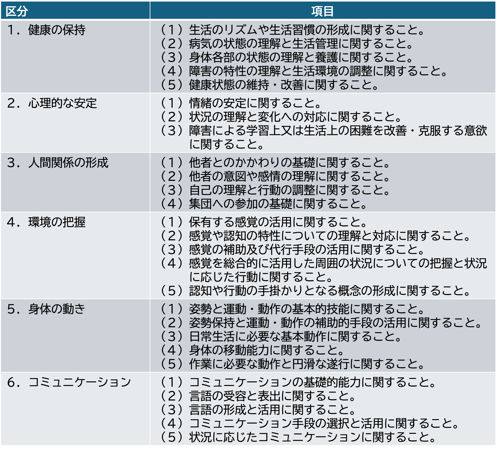

4 日本における特別支援教育の歴史と制度
日本における障害がある子どもの教育は特別支援教育という枠組みで行われています。 ここでは簡単にその歴史を振り返ってみます。 便宜的に障害児教育の歴史を（1）戦前の教育，（2）戦後の特殊教育，（3）2007年以降の特別支援教育と3つに区切って説明します。 なお，以下の記述全体については文部科学省 （2022）の『学制百五十年史』を1，戦前および戦後については平原 （1979）を参考にました。
4.1 戦前の障害児教育
日本において障害児向けの教育機関が最初に出来たのは明治時代（1868–1912）のことです。 この時代は，障害児教育の制度が公的には整っていなかったので，大きな役割を果たしたのは民間の篤志家でした。
1872年（明治5年）に学制が発され，近代的で体系的な教育制度が始まります。 学制では，欧米の障害児学校をならって「其外廃人学校アルヘシ」と小学の種類として障害児向けの学校について一応規定はされていたようですが，実際にはその実施はなされませんでした。 またこの規定の廃人学校というものがどんなものかは説明されていないため，その詳細は分からないようですが，他の資料からは廃人学校は盲学校や盲唖（もうあ）学校のことを指していたようです（平原，1979）。
4.1.1 盲教育および聾唖教育
日本で最初に設立された障害児向けの学校は1878年（明治11年）の京都盲唖院で，最初の聴覚・視覚障害児のための学校だとされます。 この学校の前身は上京第19区を管理する熊谷伝兵衛という篤志家が設けた瘤唖（いんあ）教場だとされています（平原，1979）。 ここで，1874年（明治7年）に聾（ろう）児3人の教育を担当した古河太四郎（図 4.1）が，その後京都盲唖院の初代校長となります2。
また，同じ頃，東京では盲教育のための組織「楽善会」が1875年（明治8年）に発足し，1880年（明治13年）に楽善会訓盲院が設置されました。 これらの学校はその後，それぞれ市立盲唖院（明治22年），東京盲唖学校（明治20年）と改組されていくことになりました。

これらの動きを受けて，特殊教育を行う学校の整備を求める声が高まりました。 その声に応じる形で，明治23年の第二次小学校令で「盲唖学校」は小学校に準ずる学校として規定されました。 また，明治33年の第3次小学校令において義務就学について規定されましたが，障害児については修学を免除もしくは猶予すると規定されました。
4.1.2 知的障害教育
滝乃川学園
知的障害がある子どもへの教育について，石井亮一（図 4.2）が東京の滝乃川学園で明治39年に知的障害の教育を開始しました。 以下では加藤 （1986）の記述を参考に，その初期の教育について説明します。

滝乃川学園の前身は1891年（明治24）に，罹災孤女の教育を行うために設立された孤女学院でした。 この学院の収容孤女の中に知的障害がある女児がいて，石井がその教育に苦心したことが後の知的障害教育を始めるきっかけとなったと言われています。 1897（明治30）年には学園の名前を滝乃川学園と改称しています。
知的障害の子どもの募集は1897（明治30）年ごろから開始をしました。 入園者は少なかったものの徐々に増加して，1902（明治35）年には知的障害教育の施設として 本格的なスタートをきったとされています。 1905（明治38）年には，校舎を東京府北豊島郡に移転させています3。
滝乃川学園で行われていた教育はどのようなものだっとのでしょうか。 知的障害児の教育方法を探るために，石井はアメリカで7ヶ月間の研修を受けています。 この研修の成果を生かして，日本で最初の知的障害児向けの専門書である『白痴児，其研究及教育』（石井，1904）という専門書も刊行しました4。
4.1.3 肢体不自由児と病弱児
肢体不自由児のための養護施設としては，体育教師であった柏倉松蔵が私財を投じて設立した東柏学園が東京で1921（大正10）年が初期の教育を行なっています。 また，肢体不自由児のための学校としては昭和7年に東京市立光明学園がありました。
身体虚弱・病弱児の指導はそれらよりも遅れて，大正中期以降に整備されました。 恒常的な養護・教育施設として東京養育院安房分院（明治42年）であったり，養護学校としては茅ヶ崎の林間学校 （大正6年）が知られています。 栄養学級・養護学級の名前で虚弱病弱児の学級は全国に増えていきました。
4.1.4 戦時下の教育
戦時下の1941年には国民学校令が出されます。 その中で知的障害児については，「身体虚弱、精神薄弱其ノ他心身ニ異常アル児童ニシテ特別養護ノ必要アリト認ムルモノノ為ニ学級又ハ学校ヲ編制スルコトヲ得」と規定されています。 この令により，養護学級・養護学校（今の特別支援学級・特別支援学校）という名称が使われるようになります。
また，それまで小学校だけであったものが，中学校や高等女学校でも養護学級を編成ができるように変わります。 しかし第二次世界大戦の戦局の進行とともに閉鎖が増えていきました。
4.2 特殊教育
第二次世界大戦後に連合国の占領管理下を経て，日本の教育制度は新たなスタートを切ることとなりました。 日本国憲法が1946（昭和21）年に公布され，その中で「教育を受ける権利」が国民の基本的人権の一つとして明記されることとなります。 翌1947（昭和22）年には国の教育に関する基本的理念と原則を定めた「教育基本法」および戦後の学校教育の方向性を示した「学校教育法」が公布され，戦後の教育改革が進んでいくことになります。
この新たな制度のもとで障害児への教育は特殊教育（special education）と呼ばれる形で，公的な制度へと組み込まれていきます。 具体的には，学校教育法で特殊教育を行う学校は，「盲学校」「聾学校」「養護学校」の3種類が設けられ，その設置が都道府県に義務付けられました5。 それぞれの学校には幼稚部，小学部，中学部および高等学校が置かれることとなりました。 また，これらの学校に加えて，小学校，中学校，高等学校に特殊学級を置くことができるようにもなりました。
4.2.1 盲学校・聾学校教育の義務化と養護学校の整備の遅れ
戦前の障害児教育の体制として，知的障害児や肢体不自由児のための養護学校に比べて，盲学校や聾学校の取り組みが進んでいたため，就学の義務化の実施については盲学校や聾学校が先行して行われました。 学齢に達した盲児，聾児の修学を義務付けて，その後は学年進行することにより完成を目指す方式がとられました。
一方で，養護学校については新制度の開始とともに就学義務化の実施は達成できませんでした。 その原因には，養護学校教育の実績がなく，施設設備の整備が遅れていたことや，教員養成が遅れていたことに加えて，盲・聾学校と養護学校の扱いが違って当然とする周囲の雰囲気があったことが指摘されています（平原，1979 ，p.9）。
養護学校の義務化の実施については盲・聾学校から遅れましたが，文科省は1972（昭和47）年度から「特殊教育拡充計画」を策定して，7年計画で養護学校の整備を進めました。 その結果，1978（昭和53）年には全国で500を超える養護学校に通う児童生徒の数は5万人を超えるようになりました。 学校の整備ができたことを踏まえて，1979（昭和54）年度から養護学校の義務制が実施されることになりました。
4.2.2 通級による指導の制度化
重度の障害がある児童・生徒が通うための盲学校，聾学校，養護学校は整備されていきましたが，軽度の障害児のための教育の充実は課題となっていました。 そこで，文科省は1990（平成2）年に「通級問題に関する調査研究」を開始して，1993（平成5）年の協力者会議の答申を経た上で学校教育法施行規則を改正し，言語障害，情緒障害，弱視，難聴等がある児童生徒を対象に，通級による指導という教育形態を制度化しました。
通級による指導とは，小学校，中学校の通常学級に在籍する障害児が，障害に応じた特別な指導を，通級指導教室といった特別な場で受ける形態の指導を指します。 通級指導教室では，教員の高い専門性のもとで個別のきめ細やかな指導をうけることが可能となりました。
なお通級指導の対象はその後に2006（平成18）年の法改正で，発達障害である学習障害（LD）や注意欠陥多動性障害（ADHD）の児童・生徒も対象に含めるようになりました。 また，それまで対象であった情緒障害には（1）自閉症と（2）選択性かん黙等が含まれていましたが，これらは原因および必要な指導が異なることが明らかとなったため，自閉症は独立して対象に追加するとともに従来の（2）のみを対象に情緒障害とするように分類が改められました。 また，2018（平成30）年からは，高等学校でも通級による指導が行われるようになっています。
4.3 特別支援教育
戦後の障害児教育の歴史の大きな転換となったのが2007（平成19）年特別支援教育の開始です。 これは，2006（平成18）年に「学校教育法等の一部を改正する法律」が公布され，翌2007（平成19）年に実施することを受けたものです。 障害児教育にとっての大転換であったためこの年は「特別支援教育元年」とも呼ばれています。
特殊教育から特別支援教育への転換により，様々な点が変更されました。 ここではそれらの内の（1）場による支援からニーズに応じた支援へ，（2）校内委員会と特別支援教育コーディネーターの設置，（3）特別支援学校の設置とセンター的機能の3点を説明します。
4.3.1 場による支援からニーズに応じた支援へ
従来の特殊教育と特別支援教育の最も大きな違いは，「場による教育から個々の児童生徒のニーズに応じた教育」への転換だと言われます。 従来の特殊教育は障害の種類や程度によって，教育を行う場を決めていました。 例えば，「Aさんは重度の視覚障害があるので盲学校」や「Bさんは軽度の知的障害があるので中学校の養護学級」でといったように，障害種や障害の重さが教育を受ける場を決定していました。
このような場による教育には，障害種に応じたきめ細やかな指導ができるという点で一定の成果はあったもののいくつかの問題が生じていました。第1に，盲学校・聾学校，養護学校では，単一の障害を持っている幼児・児童・生徒のみならず，複数の障害がある重複障害の児童・生徒が在籍しており，単一の障害種に応じた支援方法では対応しきれないことがありました。
第2に，小・中学校の通常学級においても，LD・ADHD・高機能自閉症があり学習や生活の面で教育的支援を必要としている児童，生徒が一定数いることが調査で明らかとなり（以下のコラム参照），そうした児童・生徒に対する支援を行う体制が十分でないことも問題でした。
これらの状況を踏まえて，障害児教育の体制は，特別な場で教育を行う特殊教育から，一人一人の教育的ニーズを把握して行う特別支援教育へと発展的に転換していきます。 具体的には，従来，盲・聾・養護学校として障害種ごとの学校であったものを特別支援学校として障害種にとらわれない学校とすることや，小・中学校における特別支援教育の体制を整えること，特別支援教育を行う教員の専門性を担保するために，新たに特別支援学校教諭免許状を創設することとなりました。
文部科学省が2002年に行った実態調査では，学級担任等を回答者にして通常の学級に在籍する児童生徒の学習面および行動面（不注意や多動，対人関係やこだわり）の困難について回答を求めました。 その結果，小・中学校全体で，知的発達に遅れはないものの学習面や行動面で著しい困難を示すと担任教師が回答した児童生徒の割合が6.3%であり，通常の学級にも特別な支援が必要な児童，生徒数が一定数在籍していることが示されました。
この実態調査は2012（平成24）年および2022（令和4）年に継続して行われており，2012年では6.5%，2022年には8.8%でした。
この変化について宮本 （2023）は，子どもたちを取り巻く環境の変化や不登校児の割合の増加とも関連づけて，数値の増加が持つ意味について論じており大変参考になります。
なお，これらの調査結果をもとに「発達障害がある児童生徒が〇〇%」のような報道がなされることもありますが，調査の留意次項として挙げられているように，発達障害の専門家による判断や医師による診断ではないので，この調査結果を「発達障害のある児童生徒数の割合を示すもの」として解釈することはできないので注意が必要です。
4.3.2 小・中学校における特別支援教育の推進
通常学級での特別支援教育を推進するために，校内支援体制の構築が欠かせません。 特別支援教育では，特別な教育的ニーズを有する児童や生徒の対応を担任の教員一人に任せるのではなく，学校組織としてチームで支援をする体制作りを進めることなりました。 こうした体制において大きな役割を果たすのが，個別の教育支援計画および個別の指導計画の作成，校内委員会とそのキーパーソンである特別支援教育コーディネーターの指名です。
個別の教育支援計画と個別の指導計画
個別の教育支援計画は，児童・生徒の一人一人のニーズを把握して，乳幼児期から学校を卒業するまで一貫した教育支援をできるようにするために作成されるものです。 例えば，幼稚園では十分な支援を受けていたにも拘らず，小学校においてその引き継ぎがなされずに一貫した支援を行うことができないといった事態を防ぐためにも，支援の指針となるものの作成が義務付けられました。 また，この個別の教育支援計画の作成の際には，医療や福祉等の関係機関の関係者と情報を共有する際にも必要となります。
個別の指導計画は，児童・生徒の一人一人のニーズを把握した上で，一定期間の間に行う指導内容や支援の方法を具体的に示したものです。 ここには指導目標やその達成基準等が示され，一定の期間後終了時にその達成状況を評価し，指導目標を設定したり，指導目標を達成できなかった場合には，支援の方略を見直したりすることで，PDCAのサイクルに基づき，指導を行えるようにしています 私が過去巡回に回っていた小学校や中学校では学期ごとに作成しているところが多かったです。
個別の教育支援計画は長期的な視点での支援について示したものである一方で，個別の指導計画は短期的な指導や支援の目的と方法を記したものだと整理できます。
校内委員会と特別支援教育コーディーネーター
校内委員会は，学校の校務分掌（役割分担）の一部として位置付けられるものです。 そこでは，特別な教育的支援が必要な児童・生徒等を早期に発見し学級担任が当該の児童・生徒を支援することを助けたり，個別の指導計画や個別の教育支援計画の作成をする際に中心的な役割を果たしたりします。
こうした校内の体制整備においてキーパーソンとなるのが特別支援教育コーディネーターです。 特別支援教育コーディネーターは校長が適任者を指名します。
特別支援教育コーディネーターの仕事は多岐に渡りますが，その中でも重要なものがチームによる支援を行うための連絡や調整係としての役割です。 学校内においては，校内委員会開催のための情報収集や学級担任の支援，校内研修の企画等があります。 また，校外の関係機関（医療，福祉，特別支援学校，教育委員会の専門家チーム等）との連絡の窓口となるほか，保護者の相談窓口となることもあります。
4.3.3 特別支援学校のセンター的機能
前項では小・中学校の特別支援教育の推進について触れましたが，特別支援教育では，特殊学級や特別支援学校などの特別な場だけでなく，通常学級を含む全ての学校において推進されるものとなりました。 その際に，その実施をバックアップする役割が特別支援学校には求められるようになりました。 その役割のことを，特別支援学校のセンター的機能と呼びます。 6。
センター的機能として特別支援学校に期待される役割として，2005年の中央教育審議会の「特別支援教育を推進するための制度の在り方について（答申）」では，以下の6つの内容例が示されています。
- 小・中学校等の教員への支援機能
- 特別支援教育等に関する相談・情報提供機能
- 障害のある幼児児童生徒への指導・支援機能
- 福祉、医療、労働などの関係機関等との連絡・調整機能
- 小・中学校等の教員に対する研修協力機能
- 障害のある幼児児童生徒への施設設備等の提供機能
「地域支援部」「相談部」「教育支援」等の名称でセンター的機能のための分掌が設けられることが多いと思います。 地域の学校の教員や保護者からの相談を受けたり，教材や教具を公開したり，研修を開いたり地域の特別支援教育を底上げするための役割を果たしています。
4.4 特別支援学校の学習指導要領
学校教育では各学校ごとに，教育課程と呼ばれる学校の教育計画を立てて，教育の目的や目標を達成することを目指します。 学校教育法では教育課程を編成する際の基準として学習指導要領を定めていて，おおよそ10年に一度改定をしています。
学習指導要領では，小学校，中学校，高等学校ごとに，教科の目標や教育内容を定めています。 特別支援学校についても同様に学習指導要領が定められています。 現在最も新しいものは小学校・中学校が2017（平成29）年に公示されたもの，高等学校が2019（平成31）年2月に公示されたものです7。
特別支援学校の学習指導要領は，幼稚部，小学部，中学部，高等部ごとに作成されます。 ここでは，これらの全てを細かく見ることはしませんが，小学部と中学部を中心に特別支援学校の教育課程を特徴づける自立活動についてと，通常の学校等の目標とは別建てで示される，知的障害および重複障害の学習指導要領の特徴を確認します。
4.4.1 自立活動とは
通常の小学校や中学校において教育課程は，（1）各教科，（2）特別の教科 道徳，（3）外国語活動（小学校のみ中学校では教科），（4）総合的な学習の時間，（5）特別活動によって構成されます。 特別支援学校の教育課程の編成ではこれらに加えて自立活動が含まれます。
2017（平成29）年4月に告示された学習指導要領では自立活動の目標を以下のように述べています。
個々の児童又は生徒が自立を目指し，障害による学習上又は生活上の困難を主体的に改善・克服するために必要な知識，技能，態度及び習慣を養い，もって心身の調和的発達の基盤を培う（p.199）。
自立活動の内容は，6区分27項目にまとめられています（表 4.1） 。 この6区分27項目の内容を全て指導するわけではありません。 個々の児童・生徒の自立を目指して，これらの中から必要な指導目標や指導内容を設定して，教育課程を編成します。 したがって，Aさんが行う自立活動の内容とBさんが行う自立活動の内容は異なったものとなります。

学習指導要領において，自立活動の内容を指導する場面については，「国語」や「算数」のような教科と同じように「自立活動の時間」を設定して指導を行うほか，各教科，道徳科，外国語活動，総合的な学習の時間，特別活動の指導の時間いおいても密接な関連を図って指導する必要があるとされています。
これについて理解するために以下のような例を考えてみましょう。 知的障害があり自己の意思の表出を言葉で行うことが難しい児童が，絵カードを用いてコミュニケーションを図る内容を自立活動で学んでいたとしましょう。 このとき，絵カードを使ったコミュニケーションが，設定された「自立活動の時間」のみで行われていたのでは，この自立活動の内容は，児童の学習上又は生活上の困難の改善には寄与しないでしょう。 各教科の授業や特別活動においても絵カードを使ってコミュニケーションを使う練習の場とすることで，絵カードを使ったコミュニケーションがその児童にとってコミュニケーションの手段として確立して，生活の質を高めることにつながっていくでしょう。
4.4.2 準ずる教育課程と知的障害及び重複障害のための教育課程
知的障害以外の障害のある児童・生徒に対する場合と，知的障害がある児童・生徒に対する場合とでは，各教科の扱いが大きく異なります。 まず，特別支援学校全体についての教育課程について説明し，続いて知的障害がある場合について説明します。
知的障害がない場合の教育課程
特別支援学校小学部と中学部の学習指導要領の総則のp.61では，教育課程の編成の際に以下の目標を達成することに努めるとされています。
- 小学部においては，学校教育法第30条第1項に規定する小学校教育の目標
- 中学部においては，学校教育法第46条に規定する中学校教育の目標
- 小学部及び中学部を通じ，児童及び生徒の障害による学習上又は生活上の困難を改善・克服し自立を図るために必要な知識，技能，態度及び習慣を養うこと
この3点目は，前項で説明した自立活動を指します。 したがって，特別支援学校の小学部や中学部では，（通常の）小学校教育の目標や（通常の）中学校教育の目標を達成するための指導目標や指導内容を設定することとなりますが，これに加えて，障害における学習や生活上の困難を克服するための自立活動に基づき指導目標や指導内容を設定していくことなります。
こうした教育過程編成は，準ずる教育課程とも呼ばれています。 これは，学校教育法の第72条において，特別支援学校が施す教育が，幼稚園，小学校，中学校又は高等学校に準ずる教育と定められていることによります。
知的障害および重複障害がある場合の教育課程
知的障害がある児童生徒に対する教育では，知的障害の特徴により通常の小学校や中学校で示される各学年ごとの目標設定が児童生徒の実態に則さないケースがほとんどであるため，独自の教科の目標や内容が，学年ごとではなく段階ごとで示されています。 これは知的発達の個人差が大きく，知的発達の個人差が大きく，学年による区分が意味をなさないためです。
具体的には，小学部では，生活，国語，算数，音楽，図画工作，体育の6教科が3段階で示されます。 外国語活動は必要に応じて設けることができる教科として扱われます。 中学部においては，国語，社会，数学，理科，音楽，美術，保健体育，職業家庭の8教科が2段階で示されます。
知的障害がある児童生徒を対象とする特別支援学校では，これらの学習指導要領を基準としながら，子どもの実態に応じて指導目標と内容が個々に設定されます。 このとき，各学部ごとに示される段階というのもあくまで目安であり，知的な障害が重い中学部の生徒は小学校の段階の学習を行っていることもあります。
また，知的障害がある児童生徒の特別支援学校では，各教科を別々に指導するのでなく，教科等を合わせた指導も行われています。 これは，知的障害がある児童生徒の場合，教科別で学んだ知識は断片化して実生活に活かせないことが多いからで，実際の生活の場に即した実践的な知識として教科内容を教えるためには，教科ごとに分けないで指導を行った方が効果的だという考えからきています。 典型的な各教科を合わせた指導としては，日常生活の指導，遊びの指導，生活単元学習，作業学習などがあります。
学習指導要領で示される各教科等の内容は，教育内容に基づく分類なのに対して，実際の指導の場ではその分類とは異なった形態で指導が行われることとなります。 この状態を指して，知的障害の教育課程は二重構造だと言われることもあります。
4.4.3 重複障害者等に関する教育課程の取扱い
重複障害がある場合には障害の状態像が多様であるため，必要がある場合にはさらに弾力的に教育課程を編成することができます。 具体的には，各教科，道徳科，外国語活動，特別活動の目標および内容に関する事項の一部や，各教科，外国語活動，総合的な学習の時間の代わりに，自立活動を主とした指導で教育課程を編成することができます。
4.5 補足
4.5.1 自立活動について参考資料（★）
自立活動の指導目標や指導内容を設定する際のポイントについて，教育委員会等が資料を提供しています。 具体的なイメージが湧きづらい場合には参照してみると良いでしょう。
- 島根県教育員会 授業づくり（自立活動）
- 岡山県総合教育センター自立活動ハンドブック−知的障害のある児童生徒の指導のために− ver.2
4.5.2 特別支援教育への転換期の重要文書（★）
2007（平成19）年の特別支援教育の開始に関係ある通知や報告書へのリンクをまとめてあります。
- 2001（平成13）年1月 調査研究協力者会議 21世紀の特殊教育の在り方について（最終報告）
- 2003（平成15）年3月 調査研究協力者会議 今後の特別支援教育の在り方について（最終報告）：「特別支援教育」の名称が文部科学省の公的な文書で初めて用いられた
- 2005（平成17）年12月 中央教育審議会 特別支援教育を推進するための制度の在り方について（答申）：盲・聾・養護学校の特別支援学校への一本化，小・中学校における支援制度の見直し，特別支援学校教員免許状
- 2006（平成18）年3月 学校教育法施行規則の一部改正（通知）※PDF：通級の対象に学習障害者と注意欠如多動性障害者を加え，情緒障害から自閉症者を独立
- 2006（平成18）年6月 特別支援教育の推進のための学校教育法等の一部改正（通知）：特別支援教育へ転換するための法改正。施行は2007（平成19）年4月1日から。
内容は文部科学省のホームページで全て読むことができます。↩︎
岡本 （1978）によれば，古河は明治3年の夏から2年間，帯刀および工事の許可書の偽造で徒刑（ずけい、今で言う懲役に似たもの）を経験しています。この獄中で陵辱される聾児を見たことが古河の盲聾教育の動機になったようです。↩︎
余談ですが，このホームページによると，1920（大正9）年に学園は火事で被災して，石井夫妻は学園を閉鎖しようとしたようです。しかし，現在の千円札にもなっている渋沢栄一の長女が石井筆子と同級生であったらしく，渋沢栄一が援助を申し出たようです。後に渋沢は学園の理事長にもなっています。↩︎
従来使われていた「聾唖学校」が「聾学校」に改められた経緯については,「唖という現象のほとんど全部は，その原因が聾にあるので，発声器官の故障によるものではない，しかも口話法の発達によって，聾者は，唖者とならずにすむことが実証されているのであるから『聾唖』という状態は，聾教育の進展とともに消滅するのだという，聾教育界の年来の主張が採用（文部省，1958 , p.38）」されたためだとされます。↩︎
学校教育法第74条においてセンター的機能は「特別支援学校においては，（中略），幼稚園，小学校，中学校。義務教育学校，高等学校又は中等教育学校の要請に応じて，第八十一条第一項に規定する幼児，児童又は生徒の教育に関し必要な助言又は援助を行うよう努めるものとする」と規定されています。ここで「第八十一条第一項に規定する幼児，児童又は生徒」とは，「次項各号のいずれかに該当する幼児、児童及び生徒その他教育上特別の支援を必要とする幼児、児童及び生徒」であり，次項各号として，知的障害者，肢体不自由者，身体虚弱者，弱視者，難聴者，その他障害のある者で，特別支援学級において教育を行うことが適当なものが挙げられています。↩︎